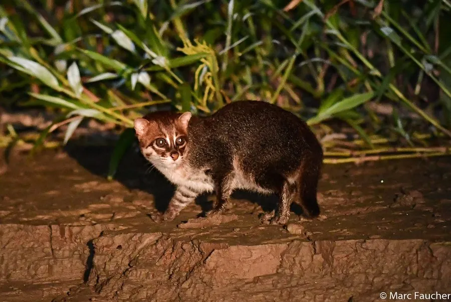

哺乳动物 · 动物界
扁头猫 Prionailurus planiceps

马来半岛与苏门答腊、婆罗洲湿地中的小型猫类，头顶扁平、耳朵小而圆，脚趾间有蹼，善于在水边捕捉鱼虾，栖息地正快速消失。
- 分类
- 门脊索动物门纲哺乳纲目食肉目科猫科属豹猫属
- 栖息环境
- 低地湿地、泥炭沼泽林、河岸与湖泊边缘
- 地理分布
- 马来半岛、苏门答腊与婆罗洲的低地湿地
- 保护级别
- IUCN 濒危（EN）；CITES 附录Ⅰ
物种志
扁头猫体长 41–50 cm，尾长 13–15 cm，体重约 1.5–2.5 kg。头顶明显扁平，耳朵小而圆，位置较低，眼睛大而靠前，四肢短，脚趾间有蹼，毛色红褐至深棕，腹部与喉部偏白，面部有浅色条纹。
它们分布于马来半岛、苏门答腊和婆罗洲的低地湿地、泥炭沼泽林与河岸，多在夜间单独活动，是猫科中少见的近水种类。食物以鱼类、蛙类、甲壳类和水生昆虫为主，也会捕食小型啮齿类和鸟类。每胎 1–2 仔，妊娠期约 56 天。泥炭沼泽排水、油棕种植园扩张和污染使适宜栖息地急剧减少，被列为濒危物种。
形态与习性
- 食性鱼类、蛙类、甲壳类、水生昆虫与小啮齿类
- 体长41–50 cm，尾长 13–15 cm
- 体重约 1.5–2.5 kg
- 繁殖妊娠期约 56 天，每胎 1–2 仔
- 活动节律夜行性，独居，近水活动
- 特点头顶扁平、耳小而圆，趾间有蹼
趣味知识
- 扁头猫的头顶扁平、耳朵低而圆，这让它的头部轮廓与其他豹猫明显不同。
- 它的脚趾间长有蹼，游泳和在水边行走都更为方便。
- 扁头猫的分布高度依赖泥炭沼泽林，这类栖息地正被迅速排干改种油棕。